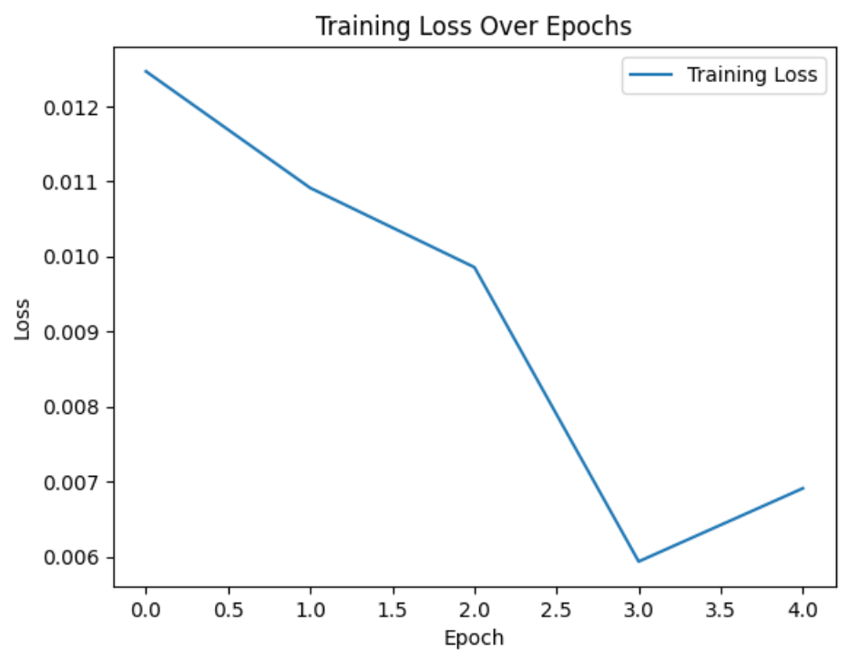
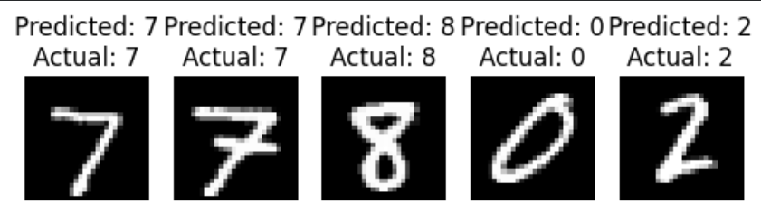

A project using convolutional neural networks to classify handwritten digits from the MNIST dataset.
There's a version of this with some more convolutional layers and feature maps. Unfortunately I may have accidentally deleted this; will update if I find it or decide to redo it (no promises).
First demonstrated by Geoffrey Hinton @ Google in 2007; "The Next Generation of Neural Networks".


import torch
import torch.nn as nn
import torch.optim as optim
import torchvision
from torchvision import datasets, transforms
import torch.nn.functional as F
from sklearn.metrics import confusion_matrix, classification_report
import matplotlib.pyplot as plt
import numpy as np
transform = transforms.Compose([
transforms.ToTensor(),
transforms.Normalize((0.5,), (0.5,))
])
train_dataset = datasets.MNIST(root='./data', train=True, transform=transform, download=True)
test_dataset = datasets.MNIST(root='./data', train=False, transform=transform, download=True)
class CNNClassifier(nn.Module):
def __init__(self):
super(CNNClassifier, self).__init__()
self.conv1 = nn.Conv2d(1, 32, kernel_size=3, padding=1)
self.conv2 = nn.Conv2d(1, 32, kernel_size=3, padding=1) # this is a copypaste
self.pool = nn.MaxPool2d(kernel_size=2, stride=2)
self.fc1 = nn.Linear(64 * 7 * 7, 128)
self.fc2 = nn.Linear(64 * 7 * 7, 128) # this is a copypaste
def forward(self, x):
x = self.pool(F.relu(self.conv1(x)))
x = self.pool(F.relu(self.conv2(x)))
x = x.view(-1, 64 * 7 * 7) # reshape x
x = F.relu(self.fc1(x))
x = self.fc2(x)
return x
model = CNNClassifier()
criterion = nn.CrossEntropyLoss()
optimizer = optim.Adam(model.parameters(), lr=0.001)
batch_size = 64
train_loader = torch.utils.data.DataLoader(dataset=train_dataset, batch_size=batch_size, shuffle=True)
test_loader = torch.utils.data.DataLoader(dataset=test_dataset, batch_size=batch_size, shuffle=False)
num_epochs = 3
# Training loop
for epoch in range(num_epochs):
model.train()
running_loss = 0.0
correct_train, total_train = 0, 0
for images, labels in train_loader:
optimizer.zero_grad()
outputs = model(images)
loss = criterion(outputs, labels)
loss.backward()
optimizer.step()
running_loss += loss.item()
_, predicted = torch.max(outputs.data, 1)
total_train += labels.size(0)
correct_train += (predicted == labels).sum().item()
epoch_loss = running_loss / len(train_loader)
accuracy_train = correct_train / total_train
print(f'Epoch [{epoch + 1}/{num_epochs}], Loss: {epoch_loss:.4f}, Accuracy: {accuracy_train * 100:.2f}%')
model.eval()
correct_test, total_test = 0, 0
all_predicted, all_labels = [], []
with torch.no_grad():
for images, labels in test_loader:
outputs = model(images)
_, predicted = torch.max(outputs.data, 1) # we look for the label with the highest assigned probability for each image
total_test += labels.size(0)
correct_test += (predicted == labels).sum().item()
# Collect predictions and true labels for later analysis
all_predicted.extend(predicted.cpu().numpy())
all_labels.extend(labels.cpu().numpy())
accuracy_test = correct_test / total_test
print(f'Test Accuracy: {accuracy_test * 100:.2f}%')
conf_matrix = confusion_matrix(all_labels, all_predicted)
print('\nConfusion Matrix:')
print(conf_matrix)
class_report = classification_report(all_labels, all_predicted)
print('\Classification Report:')
print(class_report)
def visualize_results(model, test_loader, num_images=5):
model.eval()
with torch.no_grad():
for i, (images, labels) in enumerate(test_loader):
if i >= num_images:
break
outputs = model(images)
_, predicted = torch.max(outputs, 1)
# Convert the image tensor to a NumPy array
image = images[0][0].squeeze().cpu().numpy()
# Visualize the test images and their predictions
plt.subplot(1, num_images, i + 1)
plt.imshow(image, cmap='gray') # Use the NumPy array for imshow
plt.title(f'Predicted: {predicted[0]}\nActual: {labels[0]}')
plt.axis('off')
plt.show()
visualize_results(model, test_loader)